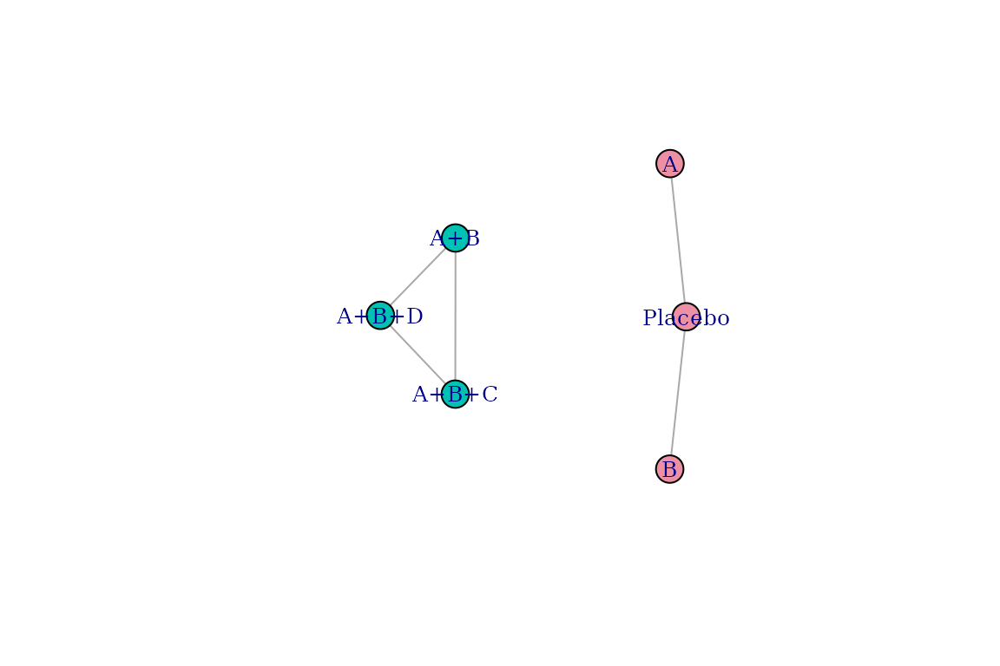
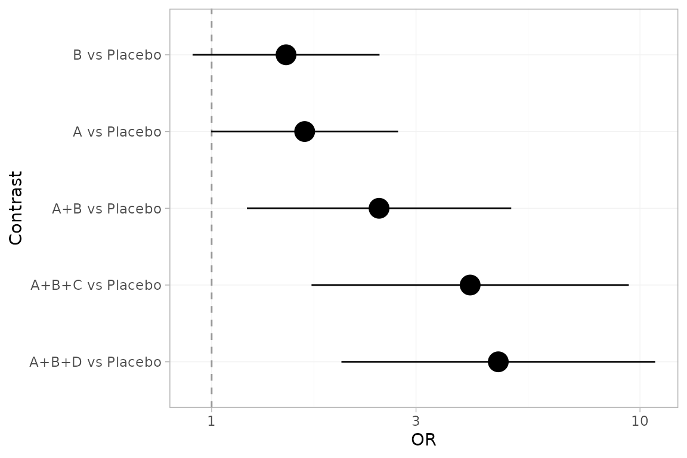

The problem
Network meta-analysis needs a connected network. When the evidence splits into two or more sub-networks with no common comparator, the network is disconnected and the treatments in different sub-networks cannot be compared directly.
cpaic reconnects such a network through the additive
component structure of the treatments (component network
meta-analysis), and then adjusts the comparisons for between-study
differences in effect modifiers using anchored population-adjustment
methods (STC, MAIC, and ML-NMR). The result is an indirect comparison
that is both connected and population-adjusted.
A disconnected example
The bundled data describe a binary-outcome network in two pieces:
- sub-network 1, anchored on placebo:
Placebo,A,B; - sub-network 2, isolated:
A+B,A+B+C,A+B+D.
No treatment is shared between the two pieces, so the network is
disconnected. The shared components A and B
bridge it.
net <- cpaic_network(cpaic_bin_agd, ipd = cpaic_bin_ipd, sm = "OR",
family = "binomial", ipd_covariates = "x1",
inactive = "Placebo")
net
#> cpaic component network
#> Summary measure: OR
#> Treatments: 6
#> Components: 4 (A, B, C, D)
#> AgD comparisons: 5
#> Reference: Placebo
#> Inactive: Placebo
#> IPD studies: 2 (binomial; 3200 patients)
#> Connected: FALSE | components bridgeable: TRUEIs the network bridgeable?
A disconnected network can be bridged only if the shared components
make all component effects identifiable, that is
rank(X) = number of components.
cpaic_connectivity(net)
#> cpaic connectivity
#> Connected network: FALSE
#> Sub-networks: 2
#> [1] 3 treatments
#> [2] 3 treatments
#> Bridging components: A, B
#> Component design: rank(X) = 4 / 4 components -> all component effects identified
#> Estimable effects: 5 / 5 vs PlaceboThe report confirms two sub-networks, identifies A and
B as the bridging components, and shows the component
effects are identifiable.
plot(net)
Step 1: connect with component NMA
cnma_bridge() fits the additive component model and
reconstructs the relative effects across the gap.
br <- cnma_bridge(net)
component_effects(br)
#> component estimate se lower upper statistic pval
#> 1 A 0.5000000 1.1922140 -1.836697 2.836697 0.4193878 0.6749328
#> 2 B 0.4000000 1.1922140 -1.936697 2.736697 0.3355102 0.7372402
#> 3 C 0.7170248 0.9734562 -1.190914 2.624964 0.7365763 0.4613800
#> 4 D 0.3250136 0.9728622 -1.581761 2.231788 0.3340798 0.7383193Step 2: adjust for effect modifiers
Components C and D come from the IPD
studies, whose effect modifier x1 is imbalanced relative to
the target population (x1 = 0). Anchored STC fits an
outcome regression with treatment-by-x1 interactions and
reads off the treatment effect at the target.
fit_stc <- cstc(net, target = c(x1 = 0), effect_modifiers = "x1")
component_effects(fit_stc)
#> component estimate se lower upper statistic pval
#> 1 A 0.5000000 0.2563324 -0.002402322 1.0024023 1.950592 0.051105590
#> 2 B 0.4000000 0.2563324 -0.102402322 0.9024023 1.560474 0.118647988
#> 3 C 0.4896667 0.2406290 0.018042458 0.9612910 2.034944 0.041856471
#> 4 D 0.6408956 0.2317142 0.186744196 1.0950470 2.765889 0.005676788Anchored MAIC instead reweights each IPD study to the target population.
fit_maic <- cmaic(net, target = c(x1 = 0), effect_modifiers = "x1",
n_boot = 100, seed = 1)
effective_sample_size(fit_maic)
#> S3 S4
#> 207.4202 358.1461Population adjustment moves the C and D
effects relative to the unadjusted (naive) bridge, while the
placebo-anchored components A and B are
unchanged:
data.frame(
component = component_effects(br)$component,
naive = round(component_effects(br)$estimate, 3),
cSTC = round(component_effects(fit_stc)$estimate, 3),
cMAIC = round(component_effects(fit_maic)$estimate, 3)
)
#> component naive cSTC cMAIC
#> 1 A 0.500 0.500 0.500
#> 2 B 0.400 0.400 0.400
#> 3 C 0.717 0.490 0.697
#> 4 D 0.325 0.641 0.772Reporting
relative_effects(fit_stc)
#> Relative effects (OR, back-transformed)
#> treatment comparator estimate se lower upper z p
#> A Placebo 1.649 0.256 0.998 2.725 1.951 0.051
#> A+B Placebo 2.460 0.363 1.209 5.005 2.483 0.013
#> A+B+C Placebo 4.014 0.435 1.711 9.416 3.194 0.001
#> A+B+D Placebo 4.669 0.430 2.009 10.850 3.582 0.000
#> B Placebo 1.492 0.256 0.903 2.466 1.560 0.119
additivity_test(fit_stc)
#> Additive component model: fit statistics
#> Total lack of fit (Q.additive): Q = 2.669, df = 1, p = 0.102
#> Additivity restrictions (Q.diff): not available -- no standard NMA
#> is estimable on a disconnected network.
#> Note: neither statistic tests whether component effects are constant
#> ACROSS sub-networks, which is the assumption that bridges the gap.
#> That assumption is untestable from the data and must be justified
#> clinically.
forest(fit_stc)
Where next
-
vignette("cpaic-methods")covers the statistical framework in depth. - The full mathematical foundations and a validation study are provided with the development sources.